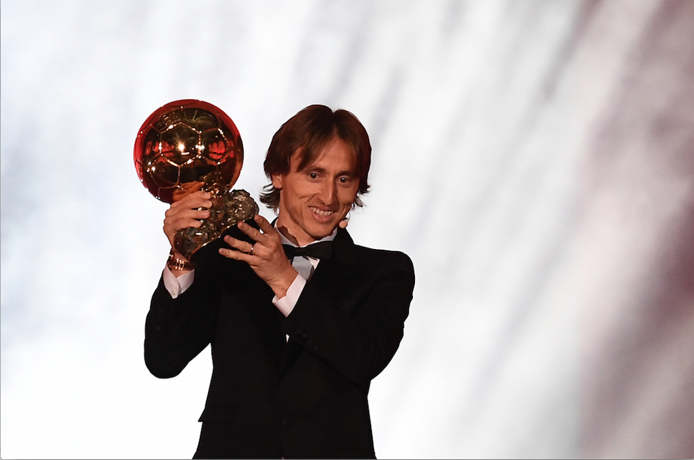

50 '
1956
1957
1958
1959
60 '
1960
1961
1962
1963
1964
1965
1966
1967
1968
1969
70 '
1970
1971
1972
1973
1974
1975
1976
1977
1978
1979
80 '
1980
1981
1982
1983
1984
1985
1986
1987
1988
1989
90 '
1990
1991
1992
1993
1994
1995
1996
1997
1998
1999
00 '
2000
2001
2002
2003
2004
2005
2006
2007
2008
2009
10 '
2010
2011
2012
2013
2014
2015
2016
2017
2018
HISTOIRE

Luka Modrić (Real Madrid) : Le milieu de terrain croate remporte son premier Ballon d'Or à 33 ans à l'issue d'une saison dans laquelle il sort vainqueur de la Ligue des Champions et atteint la finale de la Coupe du Monde.